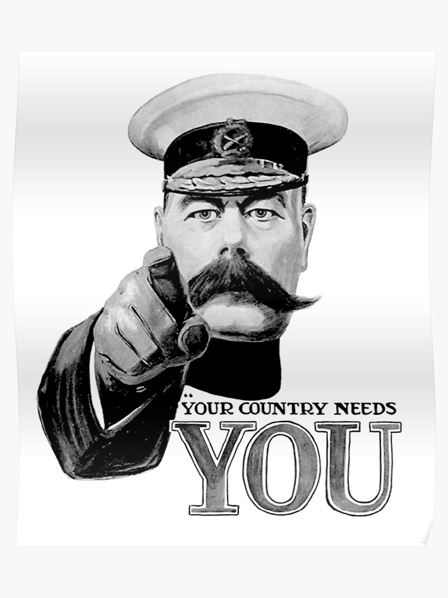

Get Election Ready!
Get Election Ready!
Our aim at GitSome...
In the age of flamboyant party propaganda and fake news, we understand that it is difficult to receive good quality, political information. Our aim as GitSome if to provide a website that allows the youth to receive unbiased political information, we are three students who understand the how important it is for young people to make informed choices to decide on the best political party to represent them in this upcoming election.